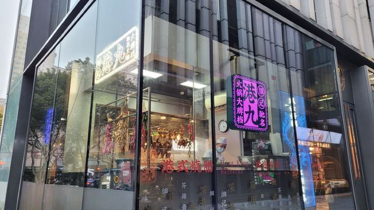
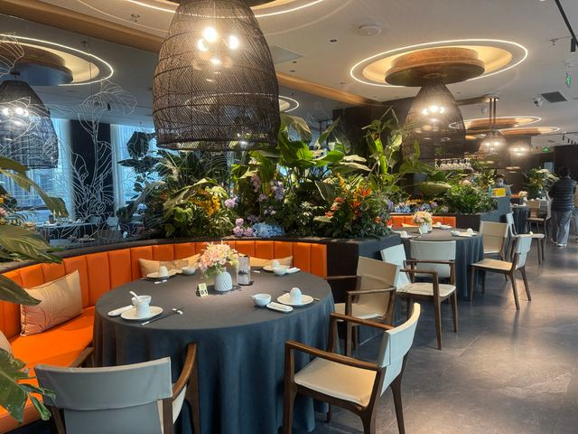
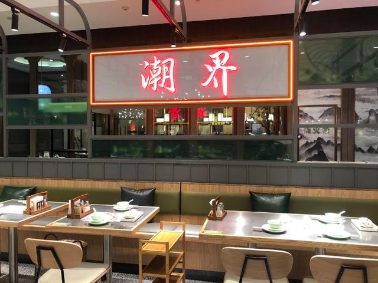
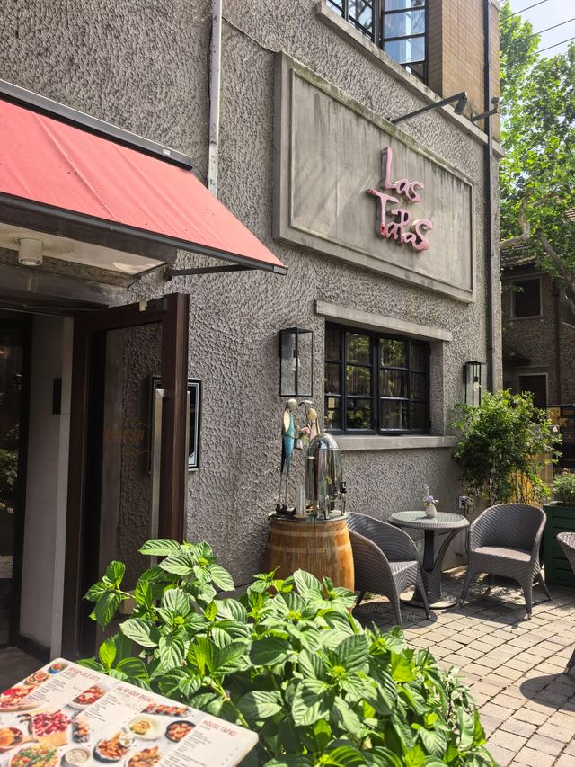
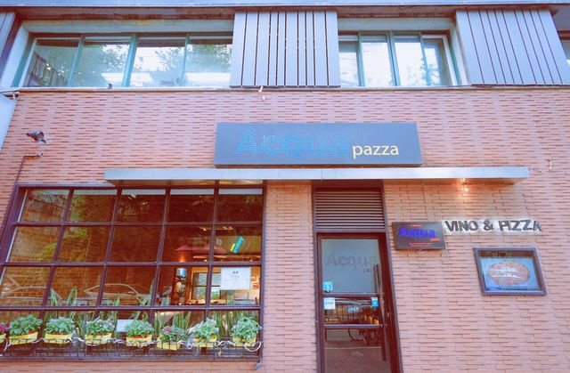
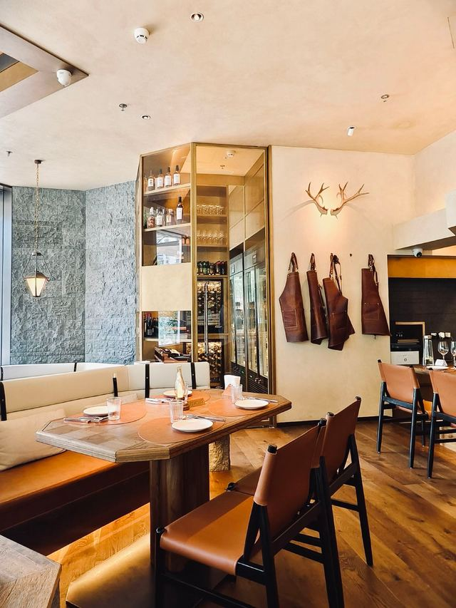
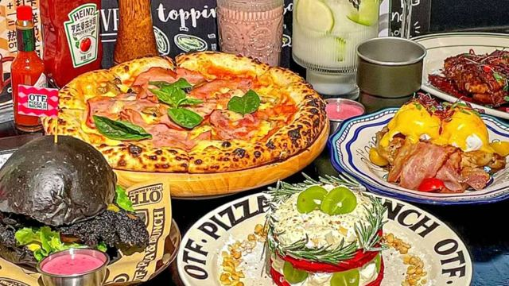
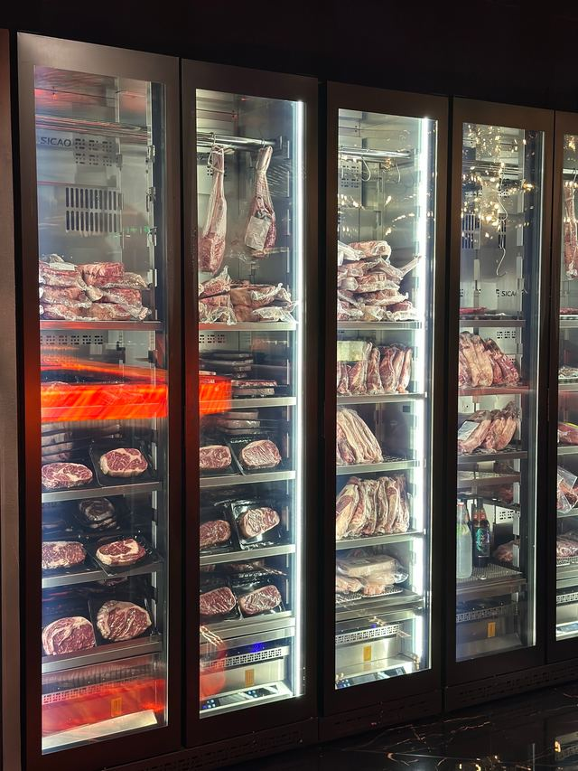

Hong Kong-style dai pai dong · Huangpu
Xiji HK-style dai pai dong (Xintiandi) 细记港九宵夜大牌档（新天地店）
Hong Kong-style dai pai dong near Xintiandi.
CNY 120per person
LikelyAmap under 100 ratingsAmap (opens Amap, or its website, in a new tab)
Ten unranked dinner options, checked 27 Nov 2026. All have ratings of 4.5 or higher in both apps. No table or availability has been confirmed.
10 places

Hong Kong-style dai pai dong · Huangpu
Hong Kong-style dai pai dong near Xintiandi.
CNY 120per person

Shunde · Huangpu
Shunde near Xintiandi.
CNY 163per person

Chaoshan and Cantonese · Huangpu
Chaoshan and Cantonese near Xintiandi.
CNY 95per person

Spanish · Huangpu
Spanish near Xintiandi.
CNY 217per person
Italian bistro · Huangpu
Italian bistro near Xintiandi.
CNY 170per person

Italian · Huangpu
Italian near Xintiandi.
CNY 151per person
Fresh pasta · Huangpu
Fresh pasta near Xintiandi.
CNY 90per person

Italian grill · Huangpu
Italian grill near Xintiandi.
CNY 230per person

Californian casual, part of a chain · Huangpu
Californian casual, part of a chain near Xintiandi.
CNY 100per person

Steak · Huangpu
Steak near Xintiandi.
CNY 268per person
Cantonese, Shunde and Chaoshan (first three); Casual Western and Italian (following seven).